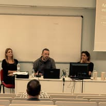
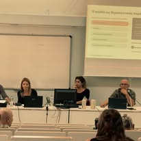
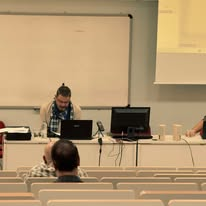
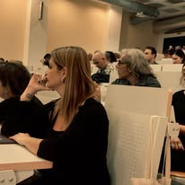
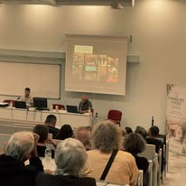
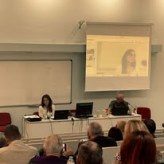
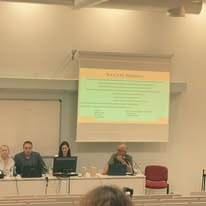
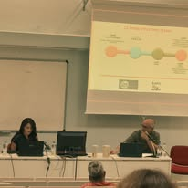
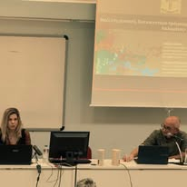
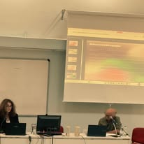

Στιγμές από την Εσπερίδα «Όταν η τέχνη γίνεται γέφυρα»
Με μεγάλη χαρά και συγκίνηση πραγματοποιήθηκε την Παρασκευή 16 Οκτωβρίου 2026, στο Πανεπιστήμιο Πελοποννήσου στον Αντικάλαμο, η εσπερίδα του Κήπου της Λυσούς «Όταν η τέχνη γίνεται γέφυρα έκφρασης, σύνδεσης και συμπερίληψης», με αφορμή το καλλιτεχνικό μας εγχείρημα «Το Σύμπαν Μέσα Μας».
Ήταν μια συνάντηση ανθρώπων από τον χώρο της επιστήμης, της εκπαίδευσης, της ψυχικής υγείας και της τέχνης, αλλά και ανθρώπων που μοιράστηκαν μαζί μας τις δικές τους προσωπικές εμπειρίες. Μιλήσαμε για τη δημιουργικότητα, τα συναισθήματα, την αναπηρία, τη διαφορετικότητα και πάνω απ’ όλα για τη σημασία του να μπορούμε όλοι να εκφραζόμαστε, να συμμετέχουμε και να ανήκουμε.










Ευχαριστούμε θερμά τους ομιλητές, το Πανεπιστήμιο Πελοποννήσου και όλους όσοι ήρθατε και μοιραστήκατε σκέψεις, εμπειρίες και ιδέες. Ανακαλύψαμε μαζί πόσα μπορούν να συμβούν όταν η τέχνη γίνεται αφορμή για συνάντηση.